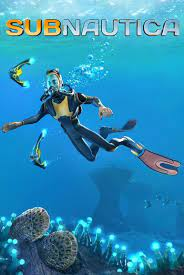

Subnautica - комп'ютерна гра в жанрах пригодницької гри та симулятора виживання з відкритим світом, розроблена інді-студією Unknown Worlds Entertainment . У Subnautica гравець може вільно досліджувати океан іншої планети, керуючи персонажем-одинаком- єдиним, що вижив при аварії космічного корабля «Аврора»; Більшість дії гри проходить під водою. Гра спочатку була випущена через систему раннього доступу Windows в 2014, надалі в ранній доступ були випущені версії для macOS і Xbox One. У січні 2018 року вийшла остаточна версія гри для персональних комп'ютерів, а для Xbox One та Playstation 4 у грудні 2018
Гравцю необхідно виживати в океані серед безлічі істот, багато з яких вкрай недружелюбні. Як у багатьох інших іграх у жанрі «виживання» , є індикатори здоров'я, спраги та голоду, а також кисню, брак якого, за постійної необхідності пірнути глибше, становить величезну проблему. Її можна частково вирішити, створюючи різного обсягу акваланги чи підводний транспорт. Для просування сюжету також потрібно створювати різні нові інструменти, їжу і транспорт.